|
5.
Process Improvement
5.5. Advanced topics 5.5.5. How do you optimize a process? 5.5.5.2. Multiple response case
|
|||
| A weighted
priority strategy is described using the path of steepest ascent for each
response
An example using the weighted priority method
|
When the responses exhibit
adequate linear fit (i.e., the response models are all linear) the question
is to find a direction or path that simultaneously considers the individual
paths of maximum improvement and balances them in some way. This case is
addressed next.
When there is a mix of linear and higher order responses, or when all empirical response models are of higher order, see sections 5.5.5.2.2 and 5.5.5.2.3. The desirability method (section 5.5.5.2.2 ) can also be used when all response models are linear. Procedure: Path of Steepest Ascent, Multiple Responses.
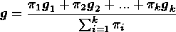 and the weighted direction is 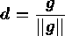 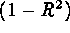 , we can use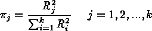 Given a weighted direction of maximum improvement we can follow the single response steepest ascent procedure as in section 5.5.5.1.1. by selecting points with coordinates 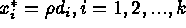 . These and related issues are explained more fully in Del Castillo (1996).Example: Path of Steepest Ascent, Multiple Response Case Suppose the response model: 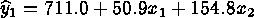 with 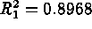 , represents the average yield of a production process obtained from a replicated factorial experiment in the two controllable factors (in coded units). From the same experiment, a second response model for the process standard deviation of the yield is obtained and given by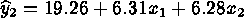 with 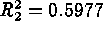 . We wish to maximize the mean yield while minimizing the standard deviation of the yield.Step 1: compute the gradients: 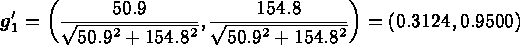 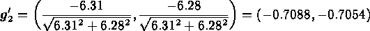 (recall we wish to minimize 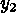 ).Step 2: find relative priorities. Since there are no clear priorities, we use the quality of fit as priority: 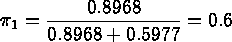 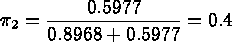 Then, the weighted gradient is 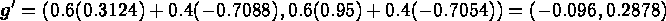 which, after normalizing it (by dividing each coordinate by 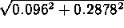 ) gives the weighted direction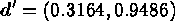 Thus, if we want to move 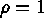 coded units along the path of maximum improvement, we will set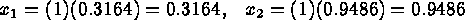 in the next run or experiment. |
||